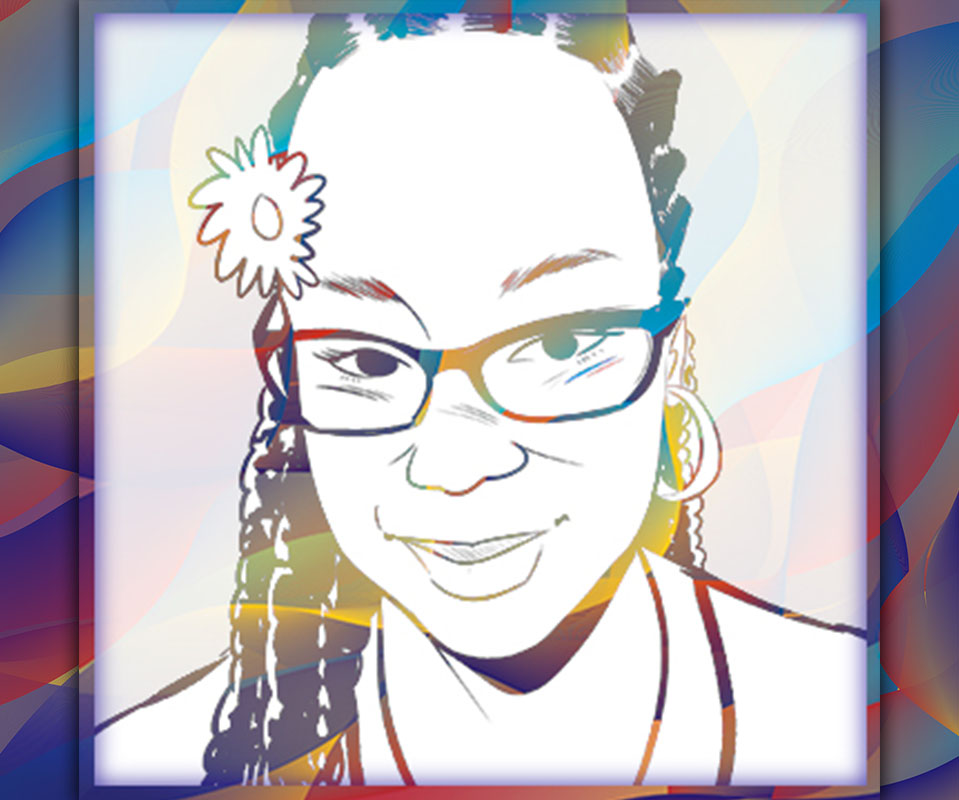

About Me
My name is Nykia Le'Shae and I'm a full-time freelance web/graphic designer, with a dash of motion graphics skills. It might seem strange that I get excited thinking about colors, typography, and design layouts, but my passion for all aspects of graphic and web design is and will remain strong throughout my design career. I have been in the web design field for about a year ang the graphic design feild for nearly 4 years, and I possess a wide range of abilities. I'm dedicated to bringing brands to life using my creative skills and paying close attention to every detail. I'm backed by an AAS in Visual Communication/Graphic Design and proficiencies in Adobe Creative Cloud and Microsoft Office.